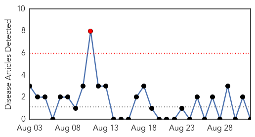
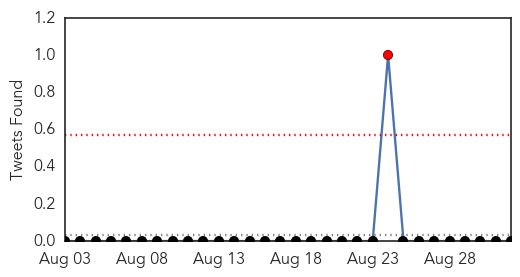
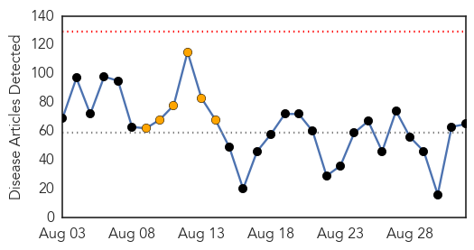
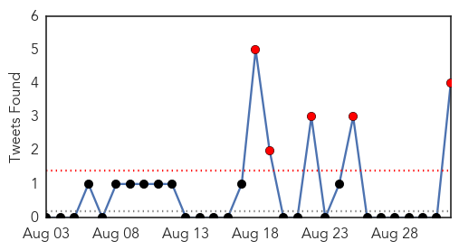
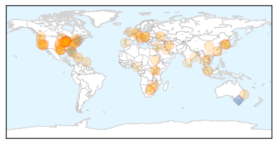
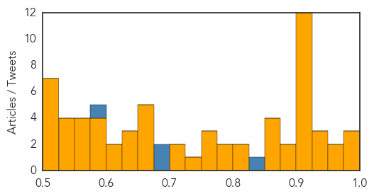

Chikungunya
30-Day Web Trend
1 alerts, 0 warnings

30-Day Twitter Trend
1 alerts, 0 warnings

Article Locations

Article Confidences

Top Articles:
-
No articles found for Sep 01, 2015
Top Tweets:
-
No tweets found for Sep 01, 2015
Unknown
30-Day Web Trend
0 alerts, 6 warnings

30-Day Twitter Trend
5 alerts, 0 warnings

Article Locations
Article Confidences
Top Articles:
- 0.994
- Third death from Legionnaires' disease at Illinois veteran home
- 0.988
- Mankato Free Press: Local News
- 0.977
- KCDC will take control of response to epidemics
- 0.974
- Flu season quickly approaching, get your flu shot
- 0.972
- Seoul announces post-MERS plan for infectious diseases
- 0.943
- 4th Legionnaires' disease death at Illinois veterans' home - MyNorthwest
- 0.939
- No Deaths Registered In Ramotswas 168 Diarrhoea Cases
- 0.925
- Is Pork the New Chicken When It Comes to Drug-Resistant Salmonella?
- 0.923
- Legionnaires' death toll reaches 7 at Illinois veterans' home
- 0.922
- A New Disease In Italian Vineyards
- 0.917
- Chicago Tribune
- 0.917
- Chicago Tribune
- 0.917
- Chicago Tribune
- 0.917
- Chicago Tribune
- 0.917
- Chicago Tribune
- 0.917
- Chicago Tribune
- 0.917
- Chicago Tribune
- 0.917
- Chicago Tribune
- 0.917
- Chicago Tribune
- 0.905
- 5 Things You Didn't Know About Stomach Flu
- 0.897
- Legionnaires Outbreaks Won't Go Away
- 0.887
- AmeriCares free flu clinic Oct. 6 in Danbury
- 0.872
- 73 San Quentin inmates with Legionnaires' disease symptoms
- 0.868
- Seven deaths, 39 Legionnaires cases now at Vet Home
- 0.866
- Iran nuclear deal backers near votes to protect pact in U.S. Congress
- 0.853
- Study finds Haitian children suffering from intestinal parasites
- 0.820
- IDPH, IDVA announce seven deaths at Illinois Veterans' home in Q
- 0.817
- Town official concerned over initial state response to hot tub infections
- 0.795
- CDC puts Doctors on ALERT for The Plague
- 0.776
- News Recorder: New HIV Vaccine Shows Promising Results in Primates
- 0.768
- Uganda reporting up to 10,000 malaria cases a week in the north
- 0.764
- Test For Diseases Early Mompati
- 0.762
- Texas teen has deadly infection after contact with amoeba
- 0.732
- Teen boy dies from rare brain-eating amoeba
- 0.721
- A breakthrough: experts say virus is the cause of the Bellinger turtles' death
- 0.705
- PAHO helps Dominica cope with health impact of Tropical Storm Erika - Dominica
- 0.672
- State Department Of Health Investigating Additional HIV Cases Tied To Southeastern Indiana Outbreak
- 0.662
- Record number of migrants arrive in Vienna
- 0.662
- Libya bans Yemenis, Iranians, Pakistanis from entry
- 0.658
- Police forcibly remove Lebanese activists from environment ministry
- 0.658
- You’ve found a deer tick on your body—now what?
- 0.649
- Sorry, deze pagina kon niet gevonden worden.
- 0.637
- Brain-eating amoeba kills budding Olympian
- 0.626
- Sanitation lack for 2.4 billion people undermining health improvements
- 0.606
- Texas teen dies of rare brain-eating amoeba infection
- 0.604
- I Want the 'Last Guinea Worm to Die Before I Do'
- 0.600
- More Legionnaires' Disease - This time it is a prison
- 0.589
- Onondaga County resident with Eastern equine encephalitis in critical condition
- 0.580
- Limiting the Risks of Biological Research
- 0.577
- Some inmate services restored to San Quentin prison
Showing top 50 articles...
Top Tweets:
- 0.835
- RT: It's not over yet! Flu expert Dr Alan Hampson discusses the Qld flu crisis & why the cold and flu season continues http…
- 0.695
- RT: Details in Jordan's hospital MERS outbreak mirror S Korea hosp outbreak patterns with infections in visitors http://t…
- 0.695
- RT: Details in Jordan's hospital MERS outbreak mirror S Korea hosp outbreak patterns with infections in visitors http://t…
- 0.582
- Figures provided by Queensland Health showed there had been 1244 confirmed cases of the flu. http://t.co/mvhQDiNyOw